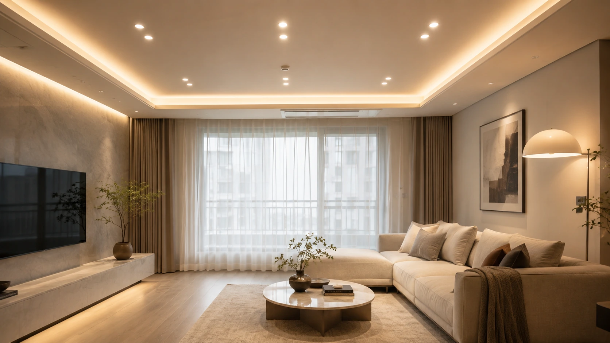
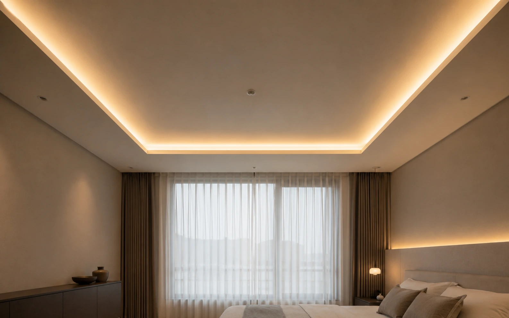
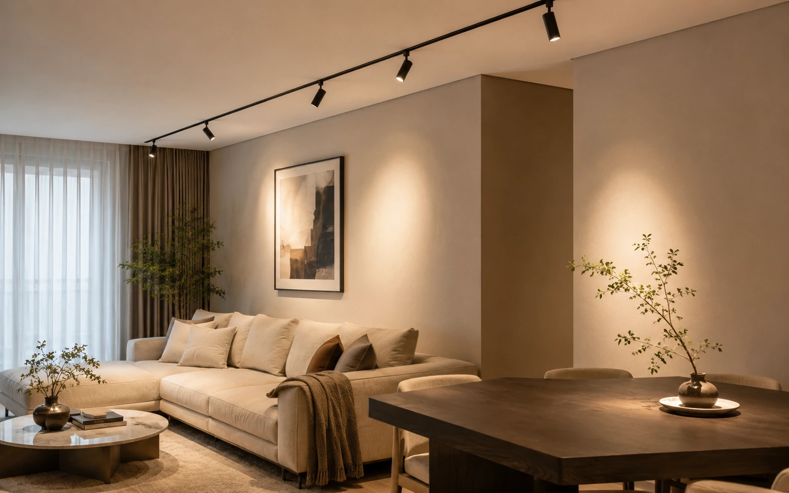
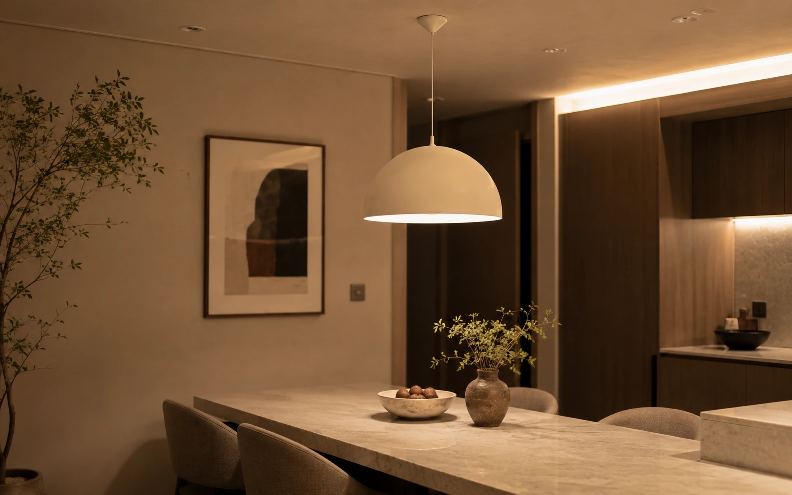
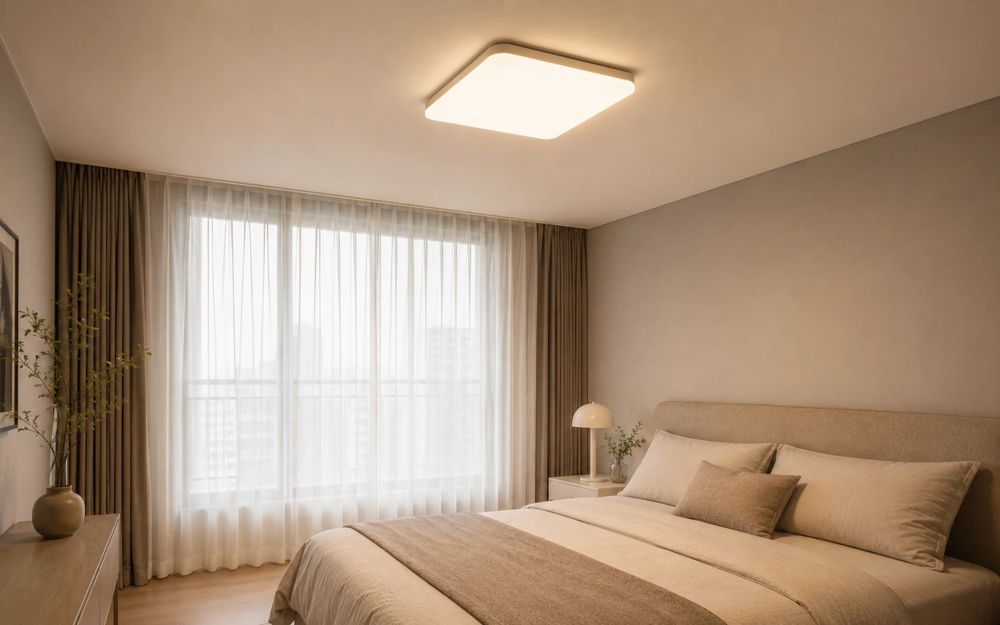

다운라이트 (매입등)
3~6만원/개 · 자재+시공
천장을 타공해 넣는 가장 보편적인 방식입니다. 천장이 깔끔해지고 눈부심이 적지만, 한번 뚫으면 위치 변경이 사실상 불가능합니다. 배광각(빛이 퍼지는 각도)에 따라 전반용·집중용이 갈립니다.
- 타공경
- 75 · 100 · 125mm
- 소비전력
- 5~15W
- 선행공정
- 전기 배선 · 천장 타공
- 사용
- 거실·방·복도 전반

조명은 기구를 고르는 일이 아니라 배치와 회로를 정하는 일입니다. 같은 등기구를 써도 색온도·개수·스위치 묶음에 따라 전혀 다른 집이 됩니다. 목공·전기 공정이 끝나면 되돌리기 어려우므로, 철거 전에 결정해야 하는 몇 가지를 먼저 짚습니다.
생활 공간은 3000K(온백색), 주방 조리대·욕실 세면대는 4000K + 연색성 Ra 90 이상이 무난합니다. 거실 전체를 다운라이트 하나로 덮기보다 전반조명 + 국부조명 2단으로 나누고, 스위치를 2~3개 회로로 쪼개는 것이 체감 만족도를 가장 크게 바꿉니다. 회로 분리와 타공 위치는 목공·전기 공정에서 끝나므로 철거 전에 확정해야 합니다.
등기구 상세페이지에서 봐야 할 값은 딱 셋입니다. 이 셋이 같으면 브랜드가 달라도 체감은 비슷합니다.
천장을 뚫는 것(매입), 천장을 만드는 것(간접), 천장에 붙이는 것(직부·레일)으로 나뉩니다. 목공 공사가 필요한지가 비용을 크게 가릅니다.
천장을 타공해 넣는 가장 보편적인 방식입니다. 천장이 깔끔해지고 눈부심이 적지만, 한번 뚫으면 위치 변경이 사실상 불가능합니다. 배광각(빛이 퍼지는 각도)에 따라 전반용·집중용이 갈립니다.

빛을 천장이나 벽에 한 번 튕겨 쓰는 방식입니다. 눈에 광원이 직접 보이지 않아 편안하지만, 목공으로 단(우물천장)이나 박스를 먼저 만들어야 합니다. 그래서 조명비보다 목공비가 더 나오는 경우가 흔합니다.

레일만 깔면 기구를 나중에 옮기거나 더할 수 있습니다. 타공이 어렵거나(콘크리트 슬래브 직천장) 배치를 확정하기 어려울 때 가장 현실적인 선택입니다. 기존 등 자리 하나로 여러 등을 쓸 수 있어 부분 시공에 유리합니다.

식탁·아일랜드·침대 머리맡처럼 자리가 확정된 곳에 쓰는 국부조명입니다. 인테리어 요소가 강해 단가 편차가 가장 큽니다. 식탁 위는 상판에서 60~75cm 정도 띄우는 것이 일반적입니다.

기존 등 박스에 그대로 붙이는 방식입니다. 전기공사 없이 기구만 바꾸는 가장 저렴한 개선이고, 임차 중인 집에서도 가능합니다. 최근 제품은 리모컨으로 색온도·밝기 조절을 지원합니다.
“우물천장 간접조명”이 왜 목공비를 부르는지는 단면을 보면 바로 이해됩니다. LED 바가 들어갈 턱과, 빛이 퍼질 공간이 필요합니다.
← 도식은 좌우로 넘겨 볼 수 있어요
아래는 국내 실무에서 통용되는 권장 범위입니다. 법정 기준이 아니라 설계 관행이며, 정확한 기준값은 KS A 3011(조도기준)을 참고하세요.
| 공간 | 권장 색온도 | 권장 조도(참고) | 메모 |
|---|---|---|---|
| 거실 (전반) | 3000K | 100~200lx | 전반 + 국부 2단 구성. 하나로 다 밝히지 않기 |
| 거실 (독서·작업) | 3000~4000K | 300~600lx | 스탠드·플로어램프로 국부 보강이 효율적 |
| 침실 | 2700~3000K | 30~100lx | 낮은 색온도. 머리맡 국부등 별도 회로 |
| 주방 (조리대) | 4000K · Ra 90+ | 300~600lx | 상부장 하부등(언더캐비닛) 필수급 |
| 식탁 | 2700~3000K · Ra 90+ | 200~500lx | 펜던트로 음식에 집중. 상판 +60~75cm |
| 욕실 (세면대) | 4000K · Ra 90+ | 300~500lx | 얼굴 정면 광원. 방습(IP44 이상) 확인 |
| 서재·공부방 | 4000~5000K | 400~700lx | 모니터 반사 피해 측면 배치 |
| 드레스룸 | 4000K · Ra 90+ | 300~500lx | 옷 색이 왜곡되면 의미 없음 — 연색성 우선 |
| 현관·복도 | 3000K | 60~150lx | 센서등이 편함. 야간 저조도 모드 유용 |
← 표는 좌우로 넘겨 볼 수 있어요
“몇 개 넣어야 하나요”에 대한 실무 계산은 이렇게 시작합니다. 정밀 조도계산은 아니지만 견적서를 검증하기엔 충분합니다.
※ 위 계산은 견적 검증용 어림식입니다. 배광각이 좁은 집중형 기구, 천장고 2.7m 이상, 어두운 색 마감재는 값이 달라집니다.
기구는 나중에 바꿔도 되지만, 배선과 스위치 위치는 벽을 다시 까야 바뀝니다. 아래는 전기 공정 전에 확정해야 하는 항목입니다.
기구 교체만 하는 최소안과, 타공·회로 신설·간접조명까지 하는 전체안의 차이가 큽니다. 간접조명은 목공비가 별도라는 점을 기억하세요.
| 평형 | 기구 교체만 | 다운라이트 전면 시공 | + 간접조명(목공 별도) |
|---|---|---|---|
| 24평 | 50~100만원 | 150~250만원 | +80~180만원 |
| 34평 | 80~150만원 | 200~350만원 | +120~250만원 |
| 45평+ | 120~250만원 | 300~500만원 | +180~400만원 |
← 표는 좌우로 넘겨 볼 수 있어요
전체 예산에서 조명이 차지하는 비중은 인테리어 비용 가이드에서 다른 공정과 함께 확인하세요.
“LED 조명 일체 ○○만원”은 비교가 불가능한 견적서입니다. 아래 항목이 숫자로 적혀 있어야 세 곳을 같은 조건에서 비교할 수 있습니다.
| 항목 | 견적서 표기 예 | 보는 법 |
|---|---|---|
| 기구별 수량 | 4인치 다운라이트 14개 | “일체”가 아니라 위치별 개수로. 도면에 표기 요청 |
| 광속·색온도·연색성 | 900lm · 3000K · Ra 90 | 세 값이 다 있어야 비교 가능. W만 적힌 견적은 반려 |
| 타공경 | Ø100mm | 기존 타공 재사용 여부와 직결. 다르면 천장 보수비 발생 |
| 컨버터(안정기) | 제조사·모델 · 디밍 지원 | 고장의 대부분은 컨버터. AS 조건과 함께 확인 |
| 회로·스위치 | 거실 2회로 · 3로 1개소 | 회로 수가 적혀 있지 않으면 전부 한 스위치일 수 있음 |
| 간접조명 범위 | 단 제작(목공) 포함/불포함 | 가장 흔한 누락 항목 — 포함 여부를 문서로 |
| 천장 보수 | 기존 타공 메움 · 도배 보수 | 등 위치를 바꾸면 반드시 발생. 별도인지 확인 |
| 인증·보증 | KC 인증 · 기구 2년 | KC 인증 표시와 보증기간·AS 주체를 계약서에 |
← 표는 좌우로 넘겨 볼 수 있어요
실패가 가장 적은 선택은 전체 3000K입니다. 여기서 주방 조리대와 욕실 세면대만 4000K·Ra 90 이상으로 올리면 음식·얼굴 색이 훨씬 정확해집니다. 5000K 이상은 사무실 느낌이 강해 주거에는 서재 정도가 적당합니다.
거실 기준 면적(㎡) × 목표조도(lx) ÷ 0.6 ÷ 기구 1개 lm으로 어림잡고, 등 간격이 천장고의 1~1.5배가 되는지 검산합니다. 20㎡ 거실에 900lm 기구라면 대략 6개 안팎입니다. 다만 스탠드·펜던트 같은 국부조명을 쓸 계획이면 전반은 줄여도 됩니다. 자세한 계산은 5장에 있습니다.
천장을 내려 단을 만드는 방식은 목공이 필요합니다. 목공 없이 간접조명 느낌을 내려면 커튼박스 안쪽에 LED 바를 넣거나, 벽면 상단에 월워셔(벽을 비추는) 조명을 쓰거나, 플로어 램프로 천장을 비추는 방법이 있습니다. 비용과 천장고 손실을 함께 따져 보세요.
기존 등 박스에 붙이는 직부등 교체는 원상복구가 쉬워 실무상 가장 흔한 선택입니다. 떼어낸 원래 기구는 보관해 두었다가 퇴거 시 되돌리면 됩니다. 다만 타공·배선을 건드리는 공사는 임대인 동의가 필요하고, 원상복구 의무가 남습니다.
많은 스마트 스위치는 상시 전원을 얻기 위해 중성선(N선)이 스위치 박스 안에 들어와 있어야 합니다. 구축 아파트는 스위치 박스에 전등선만 오는 경우가 많아 그대로는 설치가 어렵습니다. 중성선이 필요 없는 모델을 고르거나, 전기 공정 때 배선을 함께 정리해야 합니다.
철거 전, 늦어도 목공 시작 전입니다. 타공 위치·회로 분리·간접조명 단은 모두 전기와 목공 공정에서 확정되고, 그 뒤에는 천장을 다시 열어야 바뀝니다. 기구 디자인은 나중에 골라도 되지만 개수·위치·회로는 미리 정해야 합니다.